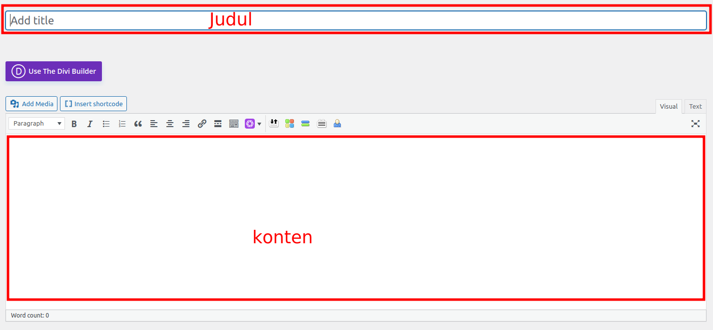
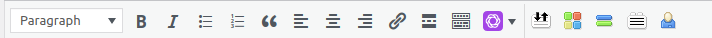
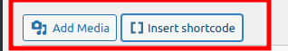
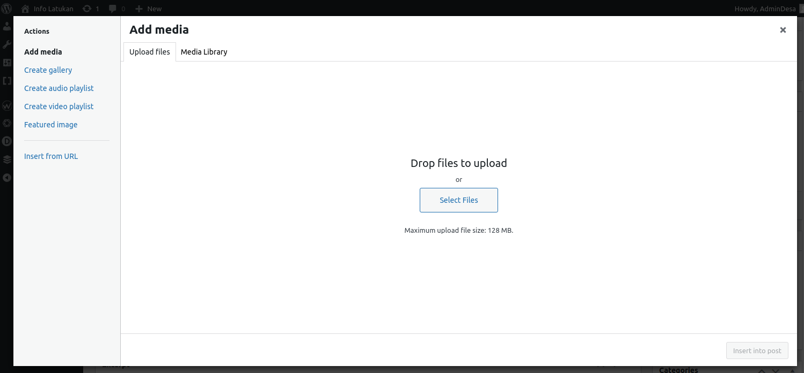
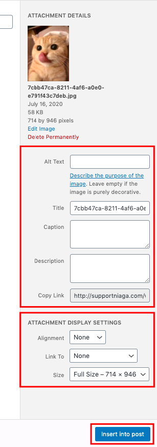
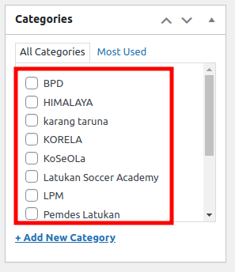
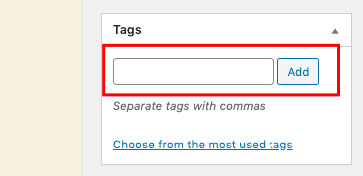
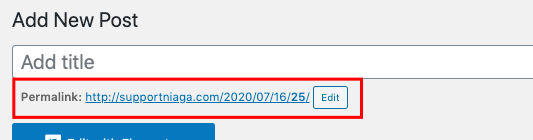
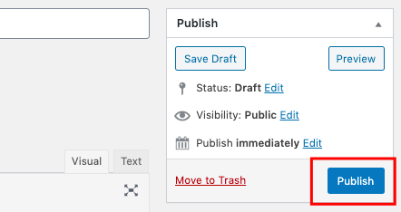

Ikuti langkah-langkah di bawah ini untuk membuat postingan di website.
1. Masuk ke dashboard WordPress Anda.
2. Pilih Posts, kemudian pilih Add New.
3. Selanjutnya, Anda akan diarahkan ke halaman Add New Post. Masukkan judul pada kolom isian Add title. Anda dapat mulai menuliskan konten postingan WordPress pada kolom editor.
4. WordPress memiliki beragam pilihan text formatting untuk mempercantik postingan Anda. Beberapa fungsi di antaranya adalah bold, italic, bullets, numbering, quotes, alignment, strikethrough, text color, dan lain-lain.
5. Untuk menambahkan gambar, video, atau audio, klik tombol Add Media. dan untuk menahkan maps , youtube ,dll klik tombol insert shortcode .
6. Anda akan diarahkan ke halaman Add Media . Di sini Anda dapat mengunggah file gambar, video, maupun audio untuk postingan Anda. Klik tombol Select Files untuk mengunggah gambar.
7. Isi atau kosongi Alt Text. Jika Anda menargetkan kata kunci tertentu, masukkan dalam kolom isian ini. Kemudian, isi Title, Caption, dan Description dengan keterangan sesuai gambar. Anda juga dapat melakukan pengaturan alignment, ukuran, maupun pengalihan tautan di sini. Klik Insert to post untuk memasukkan gambar ke postingan Anda.
8. Kategorikan postingan Anda. Anda dapat menggunakan kategori yang sudah ada.
9. Fungsi tags dapat mengategorikan postingan Anda ke dalam tema yang lebih spesifik. Masukkan tag yang Anda inginkan pada kolom isian, kemudian klik Add.
10. Permalink atau slug URL bawaan WordPress terlihat kurang menarik. Anda dapat mengubahnya dengan cara klik tombol Edit di bawah kolom isian judul.
11. Featured image adalah gambar muka postingan WordPress Anda. Jangan lupa menambahkannya dengan cara klik tautan Set featured image . Setelahnya, Anda akan diarahkan ke halaman media. Pilih atau unggah gambar yang Anda inginkan, kemudian klik tombol Set featured image .

12. Setelah semuanya siap, langkah selanjutnya adalah menerbitkan postingan WordPress. Pada pojok kanan halaman editor WordPress, Anda akan menemukan bagian bernama Publish . Di sini Anda dapat mengatur status postingan, menyimpan draft, melihat preview, menentukan siapa yang dapat melihat postingan Anda, serta menjadwalkan postingan. Klik tombol Publish untuk menerbitkan postingan WordPress.
